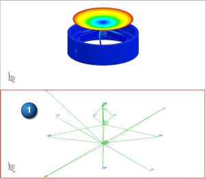
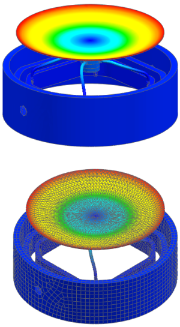

Plot results from the base_fem solution

 Upper and Lower (Layout Manager toolbar, Layout Drop-down list)
Upper and Lower (Layout Manager toolbar, Layout Drop-down list)
 Post-Processing Navigator
Post-Processing Navigator
-

 base_fem (expand)
base_fem (expand)
-
Mode 9 (expand)
-
Displacement – Nodal (expand)
-
 Magnitude
Magnitude -
 (lower viewport)
(lower viewport)
-

